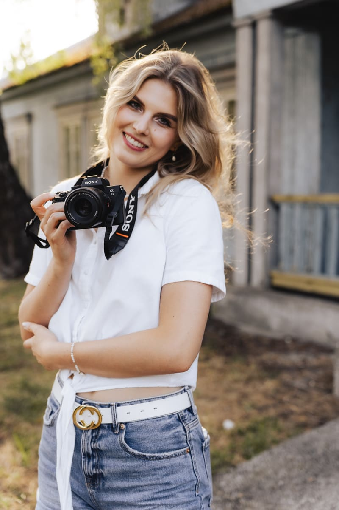
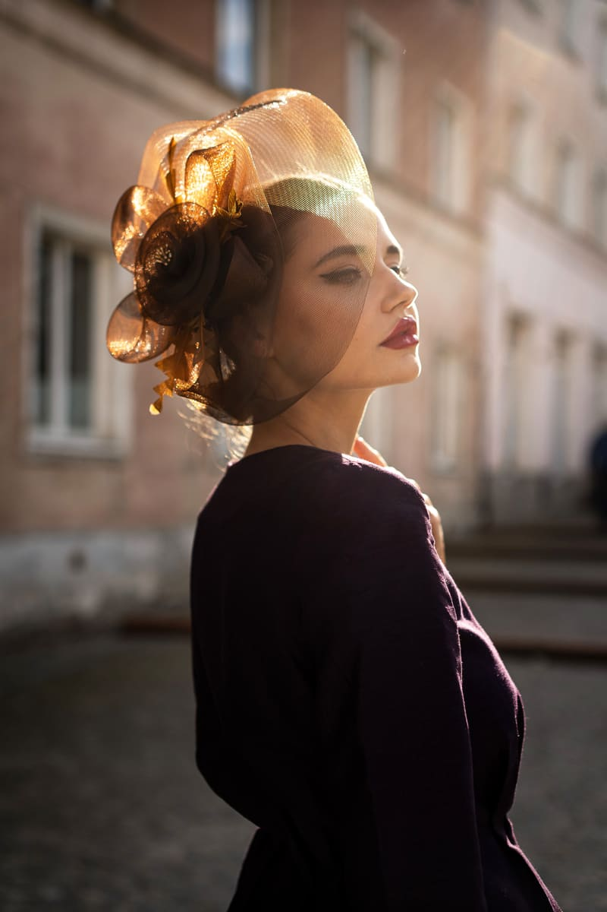
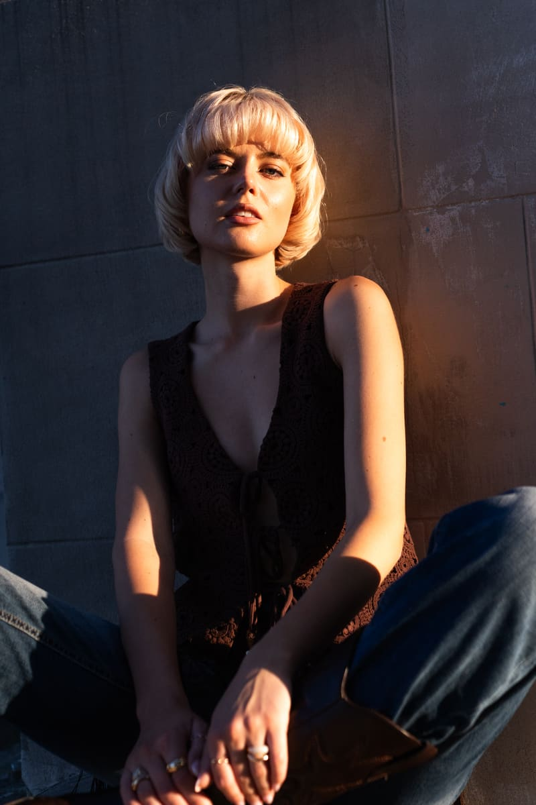
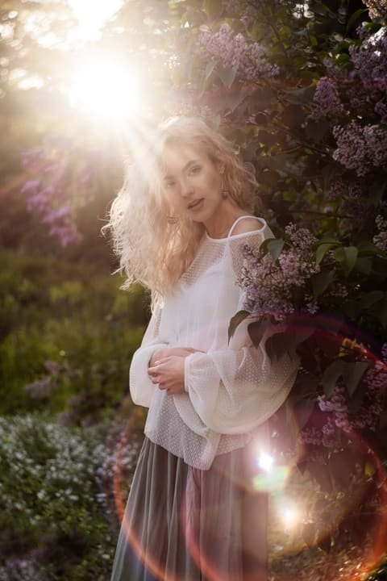
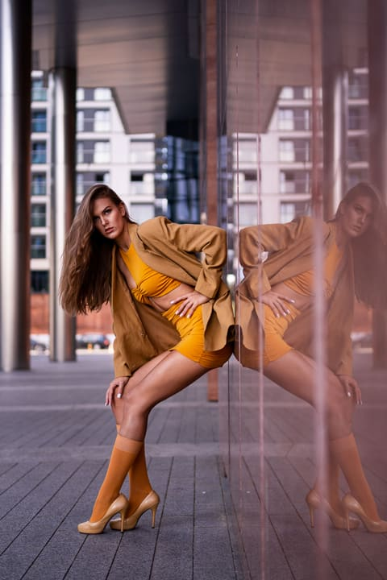
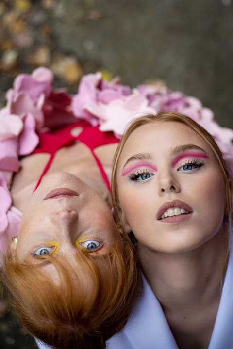
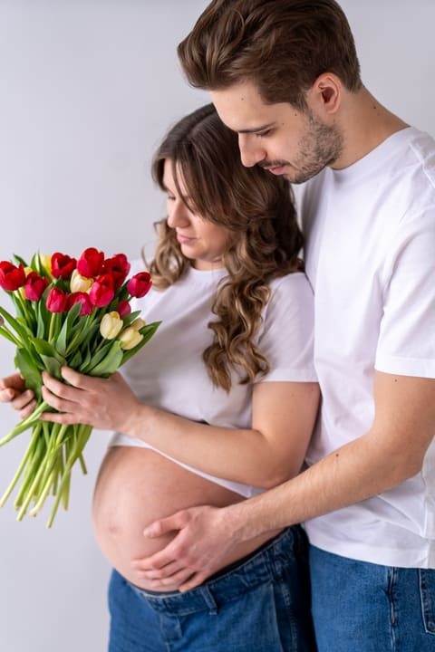
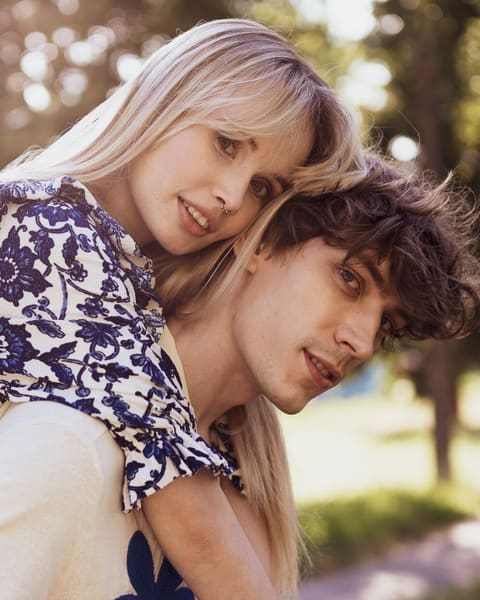
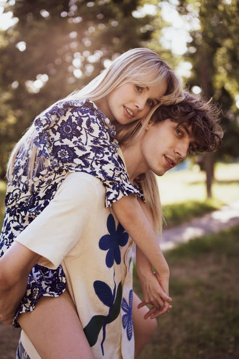

Fotograf Warszawa · Rozalia Zaremska Kadry, w których poczujesz się sobą
Tworzę naturalne, pełne światła portrety – sesje indywidualne, wizerunkowe, artystyczne, brzuszkowe, narzeczeńskie i rodzinne w Warszawie i okolicach. Pomogę Ci się ustawić, a resztą zajmę się ja.


Cześć, jestem Rozalia
Fotografuję od 8 lat. Wykonuję sesje indywidualne, wizerunkowe, modowe i artystyczne, a także intymne sesje brzuszkowe i kadry rodzinne. Działam głównie w Warszawie i okolicach.
Moja fotografia dojrzewała z czasem – to nie tylko wiele godzin praktyki, ale też ukończone kursy fotograficzne, które pomogły mi dopracować warsztat techniczny i kompozycyjny.
Fotografia to dla mnie także społeczność i dzielenie się tym, co potrafię. Wydałam dwa autorskie e-booki, na co dzień uczę fotografii na Instagramie, a co kilka miesięcy organizuję fotospotkania, na których fotografowie wzbogacają portfolio i wymieniają się doświadczeniami.
Byłam też modelką – wiem, jak to jest stać po drugiej stronie kadru i jak ważny jest komfort na planie. Zawsze chętnie pomagam się ustawić i dbam o to, by sesja była płynna i swobodna.
- 8lat za aparatem
- 2autorskie e-booki o fotografii
- 6rodzajów sesji – od portretu po rodzinę
Zapraszam Cię przed mój obiektyw!

„Najpiękniejsze kadry powstają wtedy, gdy przestajesz pozować – a zaczynasz po prostu być.”
Zobacz portfolio na Instagramie (otwiera się w nowej karcie)

Sesje zdjęciowe w Warszawie
Każdą sesję dopasowuję do Ciebie – miejsce, stylizację i klimat ustalamy wspólnie przed spotkaniem. Poniżej znajdziesz orientacyjne ceny.
-

Sesja indywidualna
Kobiecy, naturalny portret w plenerze lub w mieście. Dla Ciebie – na pamiątkę, na prezent albo po prostu dla przyjemności.
- do 1,5 h zdjęć, 1 lokalizacja
- 15 zdjęć po pełnej obróbce
-

Sesja wizerunkowa
Zdjęcia dla marki osobistej: na stronę, LinkedIn i social media. Profesjonalnie, ale z charakterem – tak, by klienci poznali prawdziwą Ciebie.
- pomoc w doborze stylizacji i miejsca
- 8 gotowych zdjęć po pełnej obróbce
-

Sesja artystyczna
Kreatywne kadry z pomysłem: odważny makijaż, kwiaty, nietypowe ujęcia. Razem zamieniamy Twoją wizję w spójną serię zdjęć.
- wspólne przygotowanie koncepcji
- 15 zdjęć po pełnej obróbce
-

Sesja brzuszkowa
Intymna, delikatna pamiątka oczekiwania na maleństwo – w studio lub w plenerze, sama lub z partnerem.
- najlepiej między 28. a 34. tygodniem
- 15 zdjęć po pełnej obróbce
-

Sesja narzeczeńska
Pamiątka zaręczyn i piękne kadry na zaproszenia ślubne czy save the date. Naturalnie, czule i z mnóstwem uśmiechu.
- do 1,5 h zdjęć w plenerze
- 15 zdjęć po pełnej obróbce
-

Sesja rodzinna i dla par
Spontaniczne, czułe kadry z bliskimi – bez sztywnego pozowania. Spacer, śmiech i emocje, które zostaną z Wami na lata.
- do 1,5 h zdjęć w plenerze
- 15 zdjęć po pełnej obróbce
Dojazd na terenie Warszawy w cenie. Wynajem studia, wizaż i dodatkowe zdjęcia – wycena indywidualna.
Od wiadomości do gotowych zdjęć
Prosto i bez stresu – na każdym etapie wiesz, co dalej.
-
Kontakt
Napisz przez formularz, e-mail lub Instagram. Odpowiadam zwykle w ciągu 24–48 godzin.
-
Konsultacja i rezerwacja
Ustalamy koncepcję, miejsce, stylizacje i termin. Zadatek potwierdza rezerwację daty.
-
Sesja
Spotykamy się na planie. Podpowiadam, jak stanąć i co zrobić z dłońmi – Ty po prostu jesteś sobą.
-
Wybór kadrów
W ciągu kilku dni otrzymujesz galerię online z podglądem i wybierasz ulubione ujęcia.
-
Odbiór zdjęć
Obrobione zdjęcia w wysokiej rozdzielczości odbierasz w galerii online do 3 tygodni od sesji.
Co mówią klientki
100% poleca · 37 opinii na Facebooku
Jestem zachwycona współpracą z Rozalią. Zdjęcia przerosły moje oczekiwania, a cudowna atmosfera sesji sprawiła, że była to także świetna zabawa 🙂 Profesjonalnie i bezproblemowo. Polecam serdecznie!
Sesja to była super przyjemność, bardzo dobrze się bawiłam, czułam się mega zaopiekowana 🥰 Fotografka jest fantastyczna, zna się na rzeczy. Zdjęcia doszły bardzo szybko i były naprawdę piękne – ciężko było się zdecydować, które wybrać, żeby dodać na social media 😍 Jestem bardzo zadowolona z sesji. Bardzo polecam fotografkę!
Szczerze polecam sesje z Rozalią. Cudowna atmosfera pełna akceptacji, zrozumienia i cierpliwości. Niesłychana uważność na drugiego człowieka, co pięknie przekłada się na efekty sesji. Dziękuję, Rozalio 💗
Zobacz wszystkie opinie na Facebooku → (otwiera się w nowej karcie)
Najczęstsze pytania
Nie umiem pozować – czy to problem?
Absolutnie nie! Większość moich klientów mówi to na początku. Jako była modelka wiem, jak to jest po drugiej stronie obiektywu – przez całą sesję podpowiadam, jak stanąć, gdzie spojrzeć i co zrobić z dłońmi.
Jak się przygotować i co założyć?
Po rezerwacji wysyłam krótki poradnik ze wskazówkami dotyczącymi stylizacji. Najlepiej sprawdzają się gładkie, stonowane kolory i ubrania, w których czujesz się dobrze. Chętnie doradzę też podczas konsultacji.
Kiedy otrzymam zdjęcia?
Galerię do wyboru kadrów dostajesz w ciągu kilku dni od sesji, a gotowe, obrobione zdjęcia – do 3 tygodni od sesji. W razie pilnej potrzeby możemy ustalić krótszy termin.
Czy dojeżdżasz poza Warszawę?
Tak. Dojazd na terenie Warszawy jest w cenie sesji, a w okolicach Warszawy i dalej – doliczam koszt dojazdu, który podam przy wycenie.
Jak zarezerwować termin i czy trzeba wpłacić zadatek?
Wystarczy wiadomość przez formularz. Po ustaleniu szczegółów termin rezerwuje zadatek, który zaliczam na poczet ceny sesji. Pozostałą kwotę opłacasz w dniu sesji lub przed odbiorem zdjęć.
Co jeśli pogoda nie dopisze?
Przy sesjach plenerowych obserwujemy prognozę i w razie deszczu bezpłatnie przekładamy sesję na inny, dogodny termin.
Umów sesję
Opowiedz mi o swoim pomyśle – jaka sesja Cię interesuje i kiedy chcesz ją zrobić. Odpowiem z propozycją terminu i szczegółami.
-
ObszarWarszawa i okolice